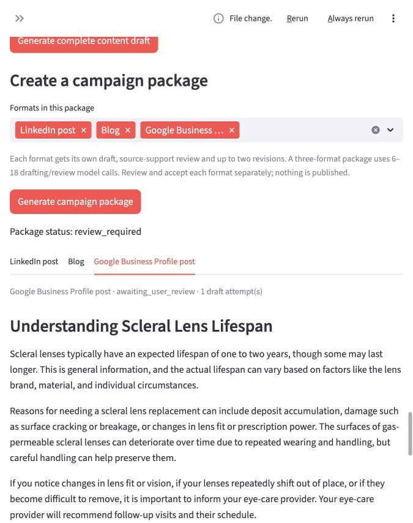
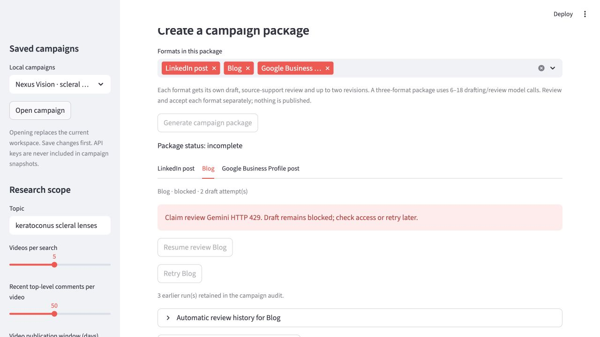

Platform-policy correction, October 6: The scleral-lens Google Business Profile draft is withheld pending platform-policy review. Its source-support check passed, but that does not establish suitability for GBP. This is our conservative interpretation of Google’s regulated-products guidance, not a rejection issued by Google. Earlier screenshots and outputs are historical evidence.
Campaign sample · October 5 evidence6 October 2026 · Saved development evidence
Pick up a campaign where you left off
Save documents, campaign settings, drafts and review history locally. Reopen a campaign and resume an interrupted source-support review on the existing draft.
This page shows saved results, not a live generation service. LinkedIn and Blog await human review. The GBP draft is withheld pending platform-policy review. Medical material and drafts still require clinical approval.
What changed and what was verified
- Campaign snapshots persist locally across browser and server sessions. API keys are excluded.
- The saved Nexus Vision campaign reopened with its documents, drafts and earlier review history.
- Live Gemini reviews resumed for Blog (9 units) and Google Business Profile (7 units). Both passed without changing draft text or increasing draft attempts.
- The LinkedIn draft had already passed its check on October 5. All three passed source-support review; GBP is subsequently withheld for platform-policy review.
- Fixed campaign reopening so a currently entered session key survives opening a saved campaign.
- 93 automated tests pass. Automated model responses are mocked; the two resumed reviews above were live calls.
Checks assess support against supplied passages, not independent truth. Earlier failures remain in the audit. This example starts with a selected topic and claims no new audience research.
Inspect the evidence
Complete campaign audit (JSON) · Campaign drafts and sources (Markdown) · Test summary
Live review screenshot

Campaign reopened in a fresh session
October 5 persistence test, before the blocked reviews were completed.

LinkedIn post
Source-support check passed · Awaiting human review
1 draft attempt(s) · 9 reviewed units
Understanding Scleral Lens Lifespan and When to Consider Replacement
Scleral lenses generally have an expected lifespan of one to two years, though some may last longer. The actual lifespan can vary based on factors such as the lens brand, material, and personal circumstances. This is general information and not a fixed replacement deadline for every patient.
Inspect support for this paragraph
scleral_lens_lifespan_and_review.md
Cleveland Clinic gives one to two years as a general expected lifespan for scleral lenses, while noting that some last longer.
scleral_lens_lifespan_and_review.md
An individual's expected lifespan depends on factors such as lens brand, material and personal circumstances.
scleral_lens_lifespan_and_review.md
This is general information, not a fixed replacement deadline for every patient.
Reasons a scleral lens might need replacement include deposit accumulation, damage like surface cracking or breakage, and changes in lens fit or prescription power. The surfaces of gas-permeable scleral lenses can deteriorate over time due to repeated wearing and handling. Careful handling of scleral lenses can help preserve their surface.
Inspect support for this paragraph
scleral_lens_replacement_reasons.md
The clinical article identifies deposit accumulation, damage such as surface cracking or breakage, and altered lens fit or prescription power as reasons a scleral lens may need replacing.
scleral_lens_surface_wear.md
Moorfields Eye Hospital explains that the surfaces of gas-permeable scleral lenses can deteriorate through repeated wearing and handling.
scleral_lens_surface_wear.md
Careful handling helps preserve the lens surface.
If you notice changes in lens fit or vision, if your lenses repeatedly shift out of place, or if they become difficult to remove, it is important to inform your eye-care provider. Your eye-care provider will recommend follow-up visits and their schedule.
Inspect support for this paragraph
scleral_lens_lifespan_and_review.md
Cleveland Clinic advises telling an eye-care provider about changes in lens fit or vision, lenses that repeatedly shift out of place, or lenses that become difficult to remove.
scleral_lens_lifespan_and_review.md
Follow-up visits and their schedule are recommended by the eye-care provider.
Call +91 8247710054 to book an appointment
Review notes
- Draft material; review pending
Blog
Source-support check passed · Awaiting human review
2 draft attempt(s) · 9 reviewed units
Scleral Lens Lifespan and Replacement
Scleral lenses generally have an expected lifespan of one to two years, though some may last longer. This is general information and not a fixed replacement deadline for every patient.
Inspect support for this paragraph
scleral_lens_lifespan_and_review.md
Cleveland Clinic gives one to two years as a general expected lifespan for scleral lenses, while noting that some last longer.
scleral_lens_lifespan_and_review.md
This is general information, not a fixed replacement deadline for every patient.
The actual lifespan of an individual's scleral lenses can vary based on factors such as the lens brand, material, and personal circumstances.
Inspect support for this paragraph
scleral_lens_lifespan_and_review.md
An individual's expected lifespan depends on factors such as lens brand, material and personal circumstances.
Reasons a scleral lens might need replacement include deposit accumulation, damage like surface cracking or breakage, and changes in lens fit or prescription power. The surfaces of gas-permeable scleral lenses can deteriorate over time due to repeated wearing and handling. Careful handling of scleral lenses can help preserve their surface.
Inspect support for this paragraph
scleral_lens_replacement_reasons.md
The clinical article identifies deposit accumulation, damage such as surface cracking or breakage, and altered lens fit or prescription power as reasons a scleral lens may need replacing.
scleral_lens_surface_wear.md
Moorfields Eye Hospital explains that the surfaces of gas-permeable scleral lenses can deteriorate through repeated wearing and handling.
scleral_lens_surface_wear.md
Careful handling helps preserve the lens surface.
If there are changes in lens fit or vision, if lenses repeatedly shift out of place, or if they become difficult to remove, an eye-care provider should be informed. Follow-up visits and their schedule are recommended by the eye-care provider.
Inspect support for this paragraph
scleral_lens_lifespan_and_review.md
Cleveland Clinic advises telling an eye-care provider about changes in lens fit or vision, lenses that repeatedly shift out of place, or lenses that become difficult to remove.
scleral_lens_lifespan_and_review.md
Follow-up visits and their schedule are recommended by the eye-care provider.
Call +91 8247710054 to book an appointment
Review notes
- Source review status: Draft material; review pending
Google Business Profile post: withheld
This scleral-lens explanation is excluded from the campaign-copy download pending platform-policy review. The original draft, citations and passing source-support review remain in the JSON audit for inspection.
A clinic-information post would need separately verified facts such as opening hours or appointment availability. No replacement post has been invented.
Next validation
Test a new non-medical business with its own source documents, audience and campaign goal. Independent user testing and broader accuracy evaluation remain pending.